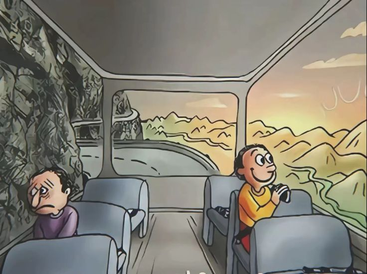

TTsahur
The Dark Masque of Trippi Troppi the Unbound.
Once, in his own world, he had been a bringer of delight. But when the Great Silence fell—a calamity that devoured all sound—he was left alone with the echo of his own thoughts. Those thoughts twisted, coiling into serpents of envy and spite. He came to despise the very notion of joy, for it was a treasure denied to him.

And Trippi Troppi the Unbound hated it. “Why should they dance,” he hissed, “while my world lies in ruin? Why should their chaos be sweet, when mine is bitter?” Thus was born his vow: to unmake the Brainrot Universe, to pluck each thread of its madness until only silence remained. He donned a masque of cracked porcelain, painted with a smile that never reached his eyes. His motley was stitched from the shadows between seconds, and his bells rang with the sound of breaking glass. With the Mirror of Between as his portal, he stepped into the Brainrot Universe. His arrival was heralded by strange omens: Capuchina’s pirouettes slowed, Freddie’s voice faltered, and Tung Tung’s drumbeat skipped like a broken heart. The air grew heavy, as if laughter itself feared to breathe. Troppi’s plan was cunning. He would not strike with brute force, but with corruption. He whispered into the dreams of the Brainrot champions, planting seeds of doubt. He turned Goggins’ resolve into obsession, Capuchina’s grace into vanity, Freddie’s song into discord. Even Tung Tung’s drum began to beat not in rhythm, but in erratic, maddening patterns. Yet the Brainrot Universe was not so easily undone. Its chaos was not fragile—it was resilient, a wildfire that thrived on unpredictability. The heroes, though shaken, began to see through his masque. They realized that to defeat him, they could not fight with order, but with greater absurdity.


Summary
Through the Mirror of Between, Trippi Troppi the Unbound sees the wild fun of the Brainrot Universe and, in a silent world devoid of joy, decides to destroy it. He visits this universe while wearing a shattered masque in order to sow uncertainty and corrupt its champions. But chaos's tenacity proves to be tough, and the Brainrot heroes respond to his schemes with even more ridiculousness. As he menacingly implies that chaos is a seed he would develop, Troppi is ultimately stuck in his own domain in the final confrontation, overpowered by the havoc he attempted to put out. The ringing of bells at the end of the story suggests that chaos will always exist.